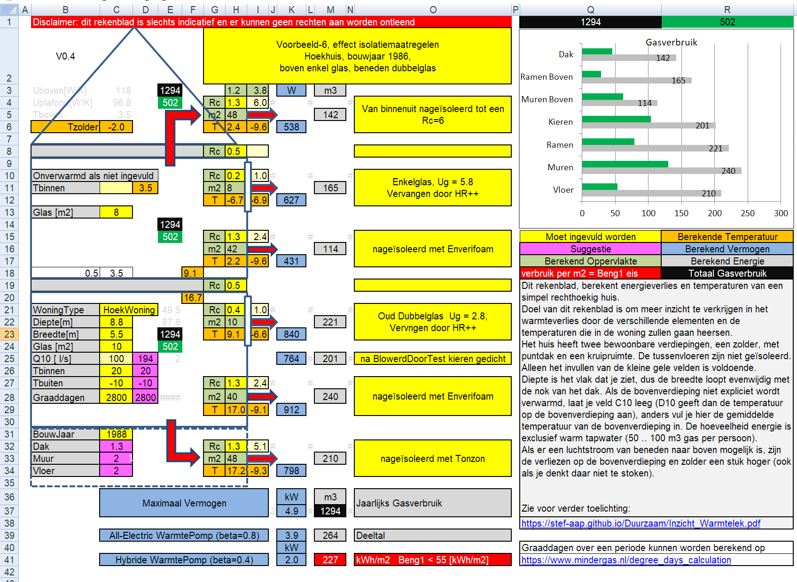
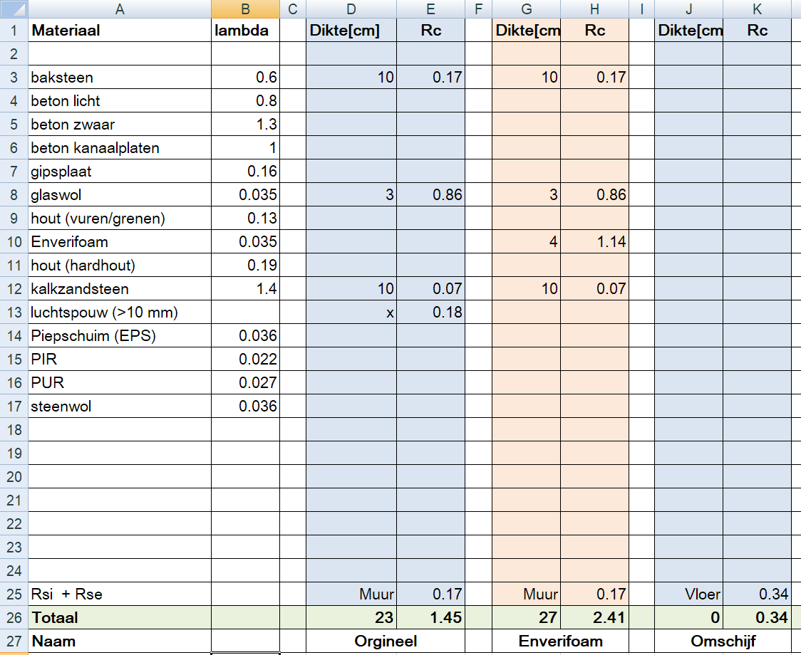

IWL_Voorbeeld_6
13 June, 2022
20:49
Omschrijving
In dit voorbeeld laten we de nieuwe mogelijkheden van versie 0.4 zien, te weten het direct bekijken van het effect van isolatiemaatregelen en het berekenen van de Rc-waarde van sandwiches.
Het betreft dezelfde hoekwoning uit voorbeeld 1, gebouwd in 1986.
De woning bevat beneden (oud) dubbelglas en boven enkel glas.
We veronderstellen dat er niet (direct) wordt gestookt op de eerste verdieping.
Wezenlijk verschil met voorbeeld-1 is dat in nu het warmteverlies door kieren wel wordt meegenomen.
Effect Isolatie-Maatregelen
In feite is het effect van de isolatiemaatregelen in een plaatje zichtbaar:
WAARSCHUWING: De getoonde temperaturen horen bij de situatie waarin nog niet de extra isolatiemaatregelen zijn genomen.

We zien dat het gasverbruik daalt van 1300 m3 gas per jaar naar 500 m3 gas per jaar, een besparing van 800 m3 gas per jaar.
We zien ook dat de benodigde capaciteit voor verwarming dermate laag is, dat een hybride warmtepomp helemaal niet zinvol is en dat zelfs volstaan kan worden met een kleine ventilatie-warmtepomp.
Rc van Sandwich Constructies
Hieronder het tweede tabblad waarmee je eenvoudig Rc waarden van sandwich constructies kunt berekenen. Het is hier gebruikt om de Rc-waarde van de spouwmuur voor en na bij-isolatie te berekenen.
Het huis heeft een spouw van 7 cm, met daarin 3 cm glaswol of steenwol (dat is lastig te bepalen met een spaak).
Door de gegevens in kolom D in te vullen, krijg je in kolom de R-waarde van elk afzonderlijk element.
Als de muur een spouw (groter dan 1 cm) bevat, moet je iets neerzetten in cel D13, darna wordt de R-waarde van een matig geventileerde spouw toegevoegd (R=0.18)
Op regel 26 staat dan het resultaat.
Het resultaat van de oorspronkelijke muur bedraagt Rc=1.45, dat is iets hoger dan de wettelijk verplichte waarde (bouwbesluit) van Rc=1.3. Echter in deze simpele berekening is geen rekening gehouden met storende factoren als bijvoorbeeld spouwankers.
In kolom G is de situatie ingevuld na bij-isoleren met Enverifoam. Dit is anders (en m.i. juister dan de berekeningen van Duits), alleen de spouw wordt gevuld en daardoor vervalt ook de matig vgeventileerde spouw.

Inzicht WarmteLek Woningen.